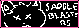

DiRECTORY
{% include "partials/interests/websites/sotfp/widget.njk" %}
display as: favicon buttons buttons (large) grid grid (large)
click the button/favicon to visit the website
cute website, where i learned how to setup git on neocities. i also love the robot character
fun tool for generating your own blinkies, with a bunch of different options available
one of my favorite personal websites on the entire internet. lots of cool pixel art, other stuff, and secrets
awesome personal site with links to a lot of useful tools and other gizmos of sorts
don't know why i like this one so much, but the doodles all over the site are just so awesome
creator of tons of useful userscripts, as well as plenty of other things. probably the biggest inspiration for this site
bunch of cute drawings
well made fictional maps. if you're into maps at all i highly recommend checking this one out
beautifully designed personal website
likely one of the most important websites in all of neocities, at least if you're really into indieweb. runs the melonland project
a dream journal and more with a really cool design
 pieces of writing that i enjoy reading
really cool artwork that for the most part only uses black, white, and red
basically just a link directory, but a really charming one that feels like it could've existed during web 1.0
beautiful vector art with a beautiful site layout
computer nerd stuff that a computer nerd would start nerding out all nerdver. this includes neocities meta
websites with a lot of art (of any type of medium) in them. this doesn't do a good job at describing this category but trust me you'll quickly get the vibe
you can find a complete A-Z button-based neocities directory over at Neonaut
e4494s Simulators, generative art, games, and some other math related stuff. Highly recommend this one.
Infinite Craft imagine Little Alchemy but with ai, so you can make whatever
PictoChat Online pictochat, but it runs inside the browser
sea bunnies :) idle game where you take care of sea bunnies. works better as a screensaver than a game
Your World of Text Infinite text grid that anybody can edit. (disclaimer: you WILL most likely see some edgelords near the starting area. the further you get from 0,0, the less of it you will see)
Color Blend select 2 colors and get a list of colors that go between them
Dither It! dithering tool that dithers images in a way that makes me happy
HEAVYPAINT really unique online drawing software, really fun to use. downloadable version also available for $30
Mesh 4 cornered gradient image generator with distortion tools
Photopea the best free in browser photo editor, with basically every feature but vignette. unironically one of the most useful websites ever
Text to ASCII Art Generator exactly what the title says. there are so many unique styles here, its basically the best tool
tools for developing your own websites or just useful programming tools in general.
CSS Glass Blurred background effect generator. Only really useful if you're new to CSS.
Google Teachable Machine Allows you to train your own basic pattern recognition (e.g. cat or dog) AI using your own training data
Material Theme Builder i really like how colors in material 3 look, so i use this alot. its good for choosing colors for your site
Favicon Catcher useful tool that lets you download a favicon from a page instead of going through devtools. also allows you to resize the favicon
GUIdebook Gallery A gallery of various GUI interface elements from many different operating systems
Infinite Mac A Mac computer you can use in the browser, all the way up to Mac OS 9.0
Nathan's Toasty Technology page Cool screenshots of various operating systems, as well as an entire section dedicated to hating on Internet Explorer
Dubolt one of my fav playlist tools for spotify. choose songs/artists and adjust sliders to quickly create a playlist
Every Noise at Once Chart of how Spotify groups how similar genres are, as well as A LOT of useful other tools. No longer updated due to Spotify staff layoffs
Explorify tool for viewing your extended spotify streaming history. note that you need to request your data from the bottom of the spotify account privacy page
Gnoosic Put in 3 artists you like and it will give you more artist recommendations
Old Gramophone Records collection of old gramophone records
Rate Your Music Random Release Gives you a random album from the entire Rate Your Music database
Spotify Dedup removes duplicate songs from your spotify playlists
xmplaylist Recently played songs on each SiriusXM station. If you still use SiriusXM for some reason, really useful
List of last.fm stats and tool sites reddit post with a pretty good list of sites that can be used with last.fm. most of these sites were taken directly from that post
Last.fm stats by far the best website for last.fm stats. it has an overwhelming amount of information and graphs
Scatter.FM every scrobble you've made and when, all on one graph
last.fm Live dashboard showing a grid of what you and your last.fm friends are listening to right now
Musicorum generate beautiful (best looking out of all generators) graphics that are good for posting to your social media story
Last.fm Mainstream Calculator find out how mainstream your music taste is without paying for last.fm pro
Lasthop your top artists on the same day in previous years
Track History huge scrolling grid showing the cover art of your most recent 75,000 scrobbles
MusiPie pie chart of your top artists
ScrobbleFlow advanced chart generator with a lot of customization and visualization options
would you look at that, there are noen
wetr ASCII only weather forecast
Blitzortung Live crowdsourced lightning map
IEMBot Monitor my favorite thing to watch during severe weather. a bunch of bots that post weather alerts and updates. you can subscribe to updates on twitter and mastodon
Google Keep the only note taking tool that you will probably need, despite what others will tell you
Monkeytype highly customizable typing test (overwhelming amount of settings). you can make an account to track performance over time.
Consumer Aesthetics Research Institute A database of actual aesthetics, none of that "Frutiger Metro" or "webcore" crap.
Google This website is so crazy. You can type in almost anything and instantly find related images and websites.
Teletext Archive Full interactive archive of teletext pages from around the world
twc classics Many old screencaps and videos of The Weather Channel.
Everything2 wikipedia if it wasn't wikipedia and not like wikipedia at all actually
in case my directory wasn't enough, here's more
i.webthings directory "My mission is to provide a vehicle for exploring the independent and noncommercial web. New listings are added regularly. Explore and enjoy!"
Marginalia search engine focused on smaller websites created by people (like mine =D)
neonaut 88x31 directory directory intending to host every 88x31 button on neocities and the sites associated with them
SDF Members directory of all members of SDF and the sites they have. has a much more old internet vibe
wiby search engine focused on older web 1.0 websites